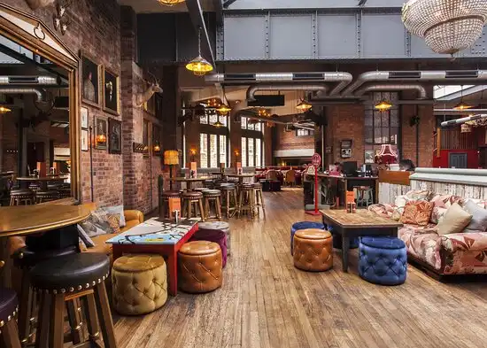
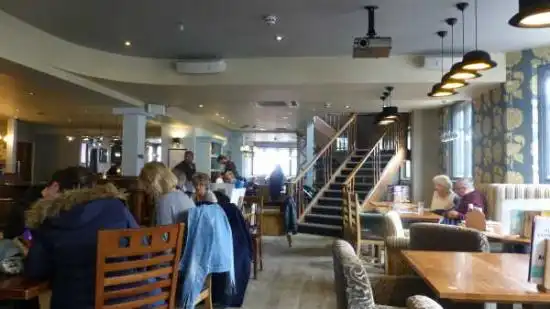
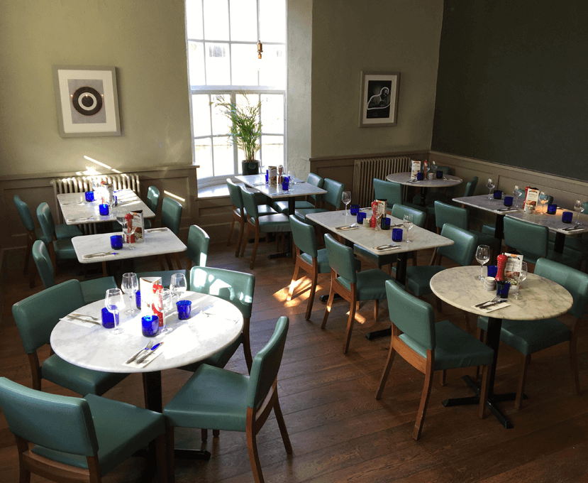

Cosy Club
The Cosy Club is a venue located in Stamford that offers luxury comfort while you
dine. Allowing for a pleasant night out where you can relax, eat and drink with
family and friends.
The Cosy Club is located in Stamford at horseshoe lane, where you can pre-book a table so you will not be required to wait before you eat.
The Cosy Club is located in Stamford at horseshoe lane, where you can pre-book a table so you will not be required to wait before you eat.
The London Inn
The London Inn is a restaurant that offers a pleasant dining experience and
occasional events, allowing customers to receive the best experience. The
London Inn is a proud establishment that is designed like an old-world pub which
offers traditional dishes, including English breakfasts.


Pizza Express
Pizza Express offers a lovely family dining experience alongside its central
location; it provides a gorgeous dining location overlooking the river Welland.
Pizza Express is ideal for a spot for lunch or dinner where you can sit and watch
the ducks at the river Welland.